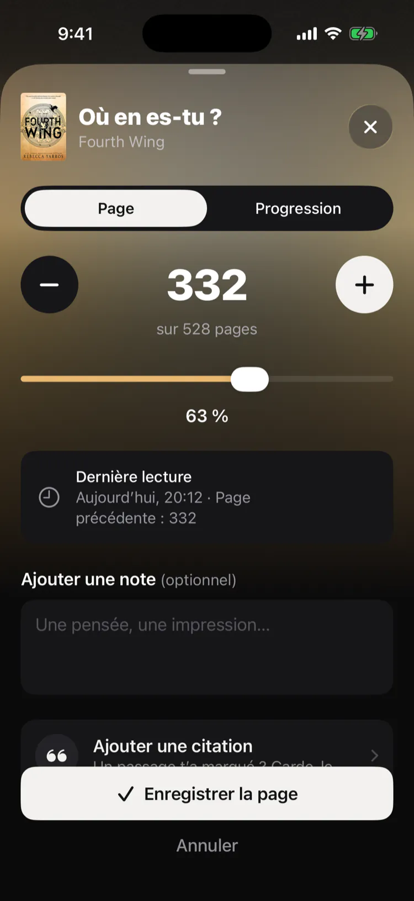
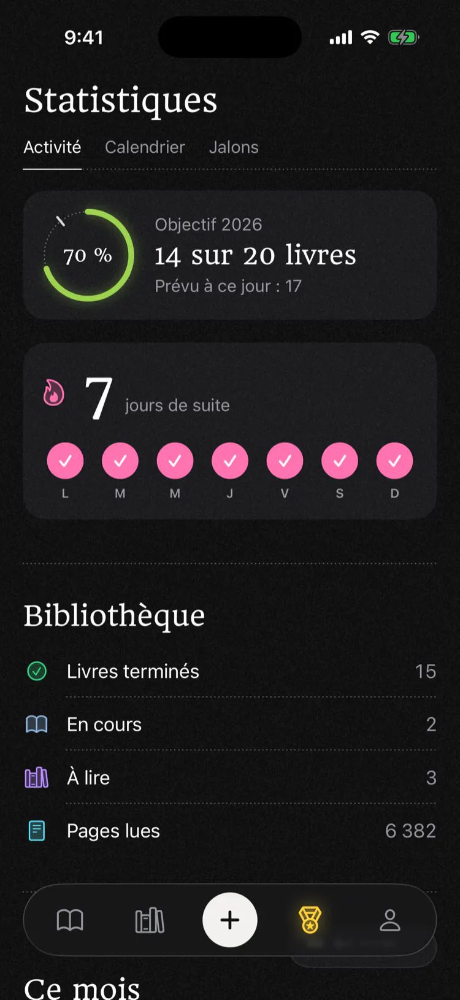
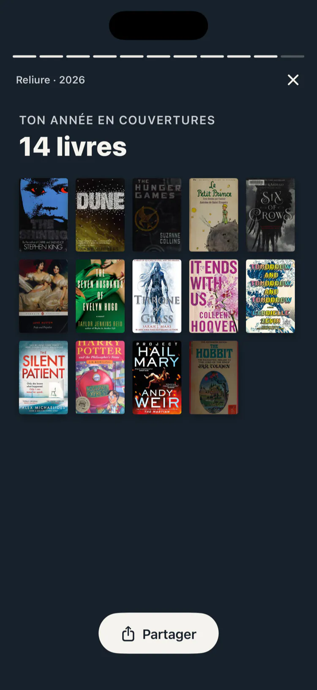
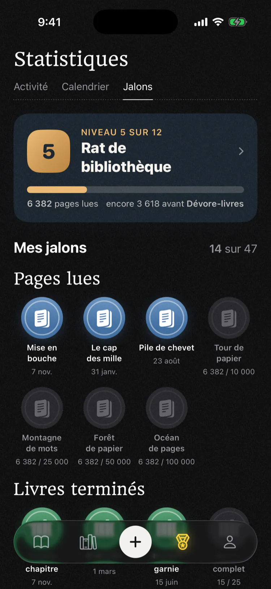

Reliure — Journal et suivi de lecture
L’app gratuite pour suivre vos lectures sur iPhone.
Scannez vos livres, notez vos pages, gardez les passages qui vous ont marqué et regardez vos lectures grandir. Gratuit, sans compte, sans pub et sans abonnement.

Reprenez votre livre en cours là où vous l’aviez laissé.
Votre livre en cours vous attend dès l’ouverture, avec votre page et votre progression. Scannez un code-barres ou cherchez un titre pour ajouter le suivant.
Notez votre progression de lecture d’un geste.
Entrez une page ou un pourcentage, ou ajustez avec + et −. Chaque mise à jour devient une session de lecture.

Statistiques de lecture, séries de jours et objectif annuel.
Pages lues, sessions et séries de jours, par semaine, par mois ou par année. Un objectif annuel, un calendrier de lecture, vos pages par auteur et par éditeur, et vos tropes préférés de l’année.

Une bibliothèque de vos lectures du moment.
« Ma bibliothèque » réunit vos lectures du moment : les livres en cours et les prochains en haut, les derniers terminés en bas. Partagez-la en image.

Votre année de lecture, en couvertures.
Tous les livres terminés cette année, couverture par couverture, prêts pour une publication ou une story.

Niveaux de lecteur, jalons et défis du mois.
Douze niveaux de lecteur, des jalons à débloquer, un défi chaque mois et une série qui pardonne un jour de congé par semaine.

Toutes les fonctionnalités.
Scan
Ajoutez un livre par son code-barres, son titre ou son auteur
Citations
Photographiez la page, gardez le passage
Évaluations
Globale ou par thème, avec vos notes
BookTok
Tropes, piquant et séries dans l’ordre
Prochaine lecture
Faites tourner la roue, laissez le hasard choisir
Widgets
Votre livre à l’écran d’accueil et verrouillé
Partage
Un livre, un mois ou votre année, en image
Souhaits
Des idées cadeaux à envoyer
iCloud
Vos livres sur tous vos appareils
Goodreads
Importez, puis exportez en tout temps
Gratuit
Sans compte, sans pub, sans abonnement
Questions fréquentes.
Qu’est-ce que Reliure ?
Reliure est une app iPhone pour suivre les livres que vous lisez : votre bibliothèque, votre page en cours, vos sessions de lecture, vos notes, vos évaluations, vos statistiques et votre calendrier de lecture.
Faut-il créer un compte ?
Non. Reliure fonctionne sans compte ni inscription. Votre bibliothèque est enregistrée sur votre iPhone et synchronisée avec votre propre iCloud.
Reliure est-il gratuit ?
Oui. Reliure est gratuit, sans publicité, sans abonnement et sans compte. Certains liens vers des librairies, comme Amazon, peuvent être des liens affiliés : nous pouvons toucher une petite commission, sans frais pour vous.
Et si je change ou perds mon iPhone ?
Si vous êtes connecté à iCloud, votre bibliothèque revient d’elle-même sur votre nouvel iPhone, avec votre objectif, vos défis et vos jalons. Vous pouvez aussi exporter en tout temps un fichier de sauvegarde Reliure, avec vos livres, sessions, citations, notes et couvertures, et le restaurer sur un autre iPhone. L’app vous rappelle discrètement de faire une sauvegarde, sans notification.
Puis-je importer ma bibliothèque Goodreads ?
Oui. Exportez votre bibliothèque Goodreads en fichier CSV, puis importez ce fichier dans Reliure.
Reliure est-il offert sur Android ?
Pas encore. Reliure est offert sur iPhone, et une version Android s’en vient.
D’autres questions ? Consultez l’assistance.
Vous aimerez aussi.
- Arpente
Chaque pas raconte un parcours (bientôt)
- Porcom
Un petit journal pour tout ce que vous regardez
- Dernier Verre
Un dernier, parfaitement dosé (bientôt)
- Coutume
Vos habitudes, un jour à la fois (bientôt)
- Bookish Club
Des t-shirts typographiques pour qui dit toujours « encore un chapitre »
Des mêmes créateurs.
- Puuunch
Suivi du temps et feuilles de temps pour petites équipes.
- Makearesu.me
Créez un CV en 5 minutes